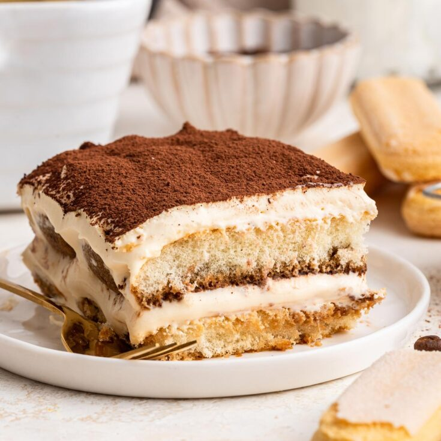

Tiramisu

A delicious and easy recipe for tiramisu, made by yours truly after heading to the local Italian deli and bakery.
This recipe makes enough for 8-10 people.
Ingredients
- 6 eggs
- 180 grams of sugar
- 500 grams of ladyfingers
- 500 grams of mascarpone cream
- 100 mL of espresso coffee
- 1 tsp of vanilla extract
- Cocoa powder
- Milk to your taste for the coffee
Steps
- Begin by brewing the espresso to be used to dip the ladyfingers in later, and allow the coffee to cool
- Separate the egg yolks from the egg whites
- Using a stand mixer, mix the egg yolks with 60 grams of sugar, the mascarpone cream,
and 1 tsp of vanilla extract until the mix is able to slowly drip from the whisk
- Transfer the mascarpone mix into another mixing bowl and clean the stand mixer bowl
- Once completely clean and dry, add the egg whites into the stand mixer and begin whisking
while slowly adding in the remaining 120 grams of sugar to create a meringue
- Once the meringue is able to form stiff peaks, as in the meringue is able to stand on its own
once you take the whisk off and turn it upside down, add it to the mixing bowl
- Fold in the meringue to the mascarpone mix by sliding the spatula from the bottom of the bowl
to avoid deflating the meringue
- Dip each ladyfinger in the espresso and lay a sheet of them in the baking tray
- Spread half of the cream onto the ladyfingers and lay another coffee dipped layer of ladyfingers on top
- Spread the remaining half of the cream on top
- Carefully dust the top of the tiramisu with a thin layer of cocoa dust
- Place some plastic wrap over the tiramisu and place it into the refigerator to set for 24 hours
- Congratulations! You've made tiramisu!
Home